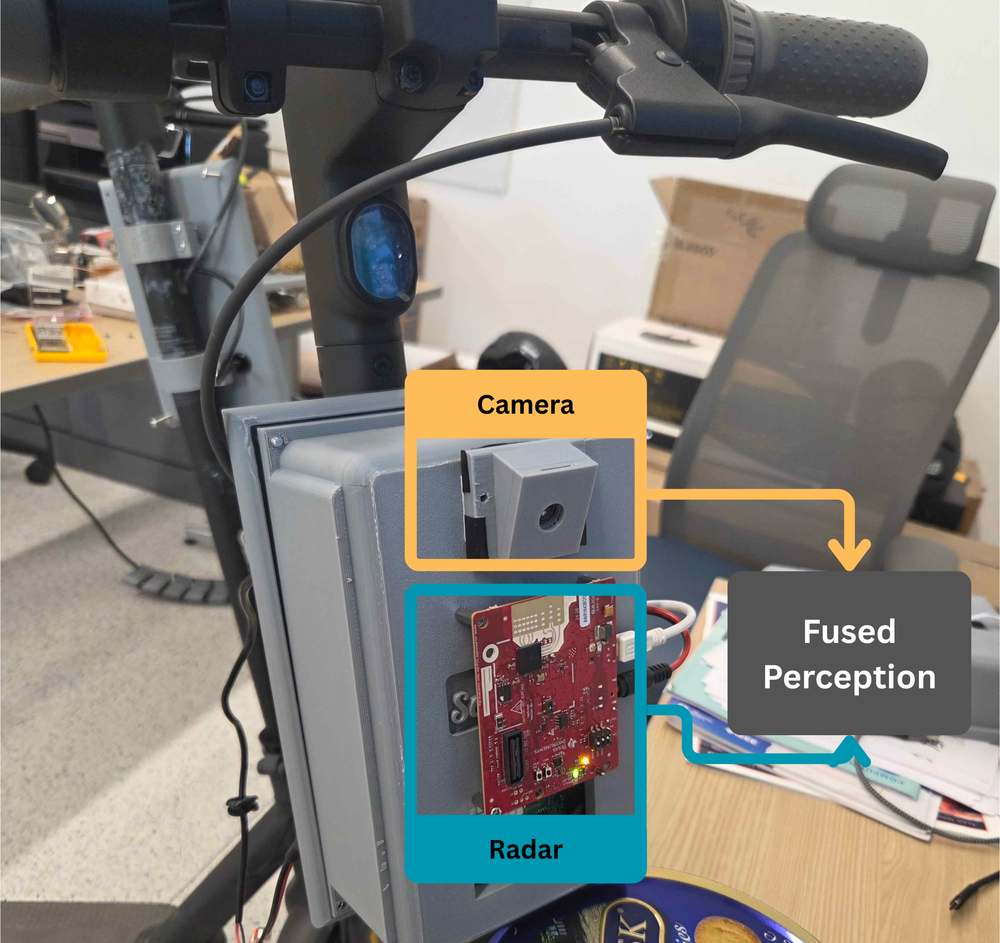

The future of autonomous driving relies heavily on the ability to accurately detect and track objects in real-time. This comprehensive analysis explores how the fusion of millimeter-wave (mmWave) radar technology with traditional camera systems creates a robust and reliable object detection framework that significantly enhances vehicle safety and navigation capabilities.
Technology Overview
What is mmWave Technology?
Millimeter-wave technology operates in the frequency range of 30-300 GHz, providing high-resolution radar capabilities that can penetrate adverse weather conditions. Unlike traditional sensors, mmWave radar offers exceptional range, velocity, and angle measurements with minimal interference from environmental factors.
- Frequency range: 76-81 GHz for automotive applications
- Detection range: Up to 300 meters
- Angular resolution: Sub-degree precision
- Weather independence: Functions in rain, fog, and snow

Our system collects data using a custom 3D-printed enclosure that integrates mmWave sensors with camera fusion technology, mounted on a scooter for mobility. This platform, developed by the Scooter Lab, enables efficient data collection in real-world environments. In collaboration with the lab, we are leveraging this system to advance sidewalk-based autonomous driving and high-precision mapping.
Sensor Fusion Architecture
Camera System Benefits
- High-resolution visual data
- Color and texture recognition
- Traffic sign interpretation
- Lane marking detection
mmWave Radar Advantages
- All-weather operation
- Precise distance measurement
- Velocity detection
- Penetration through obstacles
The fusion architecture combines the strengths of both technologies through advanced algorithms that process and correlate data streams in real-time. This multi-modal approach significantly reduces false positives and negatives while providing redundancy for critical safety systems.
Object Detection Pipeline
Multi-Stage Processing
Data Acquisition
Simultaneous capture from camera and mmWave sensors
Preprocessing
Noise reduction, calibration, and temporal alignment
Feature Extraction
AI-powered analysis of visual and radar signatures
Fusion & Classification
Combined analysis for accurate object identification

Expected Performance Metrics
Real-world testing demonstrates significant improvements in object detection reliability compared to single-sensor systems. The fusion approach achieves industry-leading performance metrics while maintaining computational efficiency suitable for real-time applications.
Challenges and Solutions
Data Synchronization
Ensuring temporal alignment between different sensor modalities requires sophisticated buffering and interpolation techniques. Our solution implements hardware-level timestamping and predictive algorithms to maintain sub-millisecond synchronization.
Camera mmWave Radar Calibration
Achieving accurate calibration between camera and radar sensors requires careful computation of intrinsic and extrinsic parameters. Our solution applies intrinsic matrix calibration to correct for lens distortions and establish precise camera geometry, while the extrinsic matrix defines the spatial transformation between the camera and radar coordinate frames. This ensures accurate sensor fusion for reliable perception and mapping.
Computational Complexity
Processing multiple high-bandwidth data streams demands optimized algorithms and specialized hardware. Edge computing units with dedicated AI accelerators enable real-time fusion processing without compromising vehicle performance.
Environmental Adaptation
Varying lighting conditions and weather patterns require adaptive algorithms that can dynamically adjust fusion weights and parameters. Machine learning models continuously optimize performance based on environmental context.
Future Directions
The next generation of autonomous driving systems will integrate additional sensor modalities including LiDAR, thermal imaging, and advanced AI processing capabilities. Research continues into neural network architectures specifically designed for multi-modal sensor fusion.
Emerging Technologies
- 4D imaging radar with enhanced resolution
- AI-powered predictive object tracking
- Vehicle-to-everything (V2X) communication integration
- Quantum sensing for ultra-precise measurements
Conclusion
mmWave camera fusion represents a critical milestone in autonomous driving technology. By combining the complementary strengths of radar and vision systems, we achieve unprecedented levels of safety and reliability. As the technology continues to evolve, we can expect even more sophisticated integration techniques that will bring us closer to fully autonomous transportation.